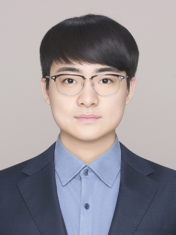
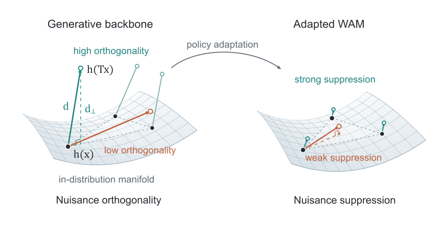
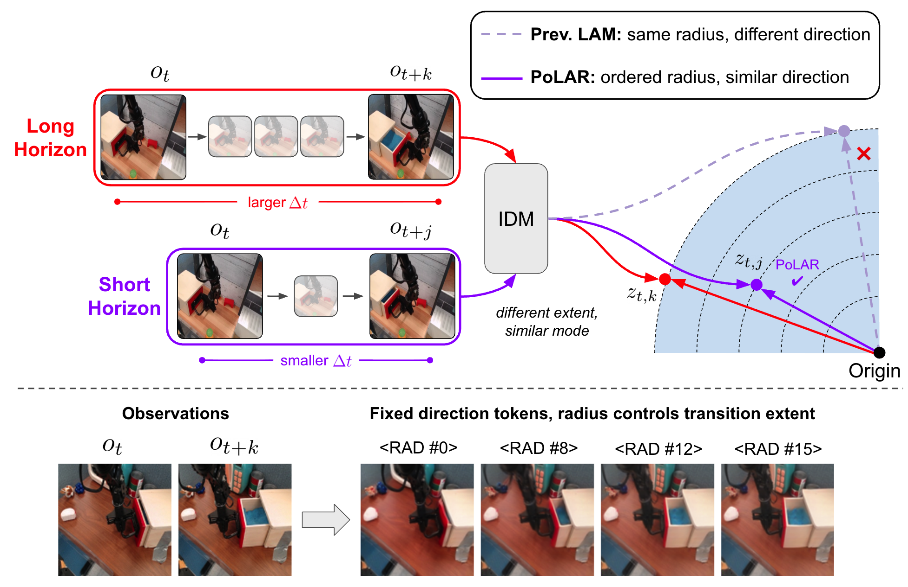
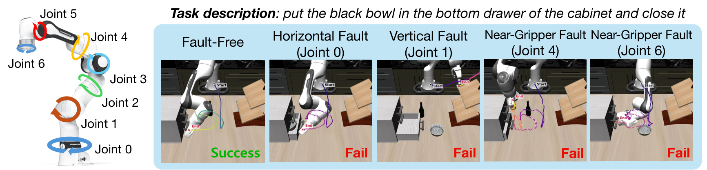
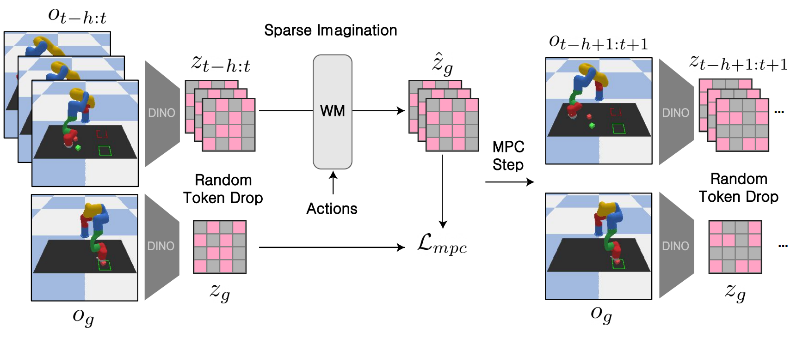

Junha Chun
I am a Ph.D. student in Electrical and Computer Engineering at Seoul National University, advised by Taesup Kim in the Graduate School of Data Science. I received my B.S. in Electrical and Computer Engineering from Seoul National University.
My research interests are world models, latent action representations, and robot learning. I study representations of physical dynamics for visual generalization and efficient planning. I am also recently interested in agentic robotics, dexterous manipulation and tactile modality.

Publications
* Equal contribution.
-

How Representational Priors Shape Generalization in World Action Models
Junha Chun, Youngjoon Jeong, Taesup Kim
arXiv preprint, 2026.
PaperWe study how pretrained representation geometry relates to visual robustness in world action models.
-

PoLAR: Factorizing Extent and Mode in Latent Actions for Robot Policy Learning
Youngjoon Jeong, Jihwan Yu, Minsoo Jo, Junha Chun, Taesup Kim
Conference on Robot Learning (CoRL), 2026.
Paper · ProjectPoLAR separates the extent and mode of visual transitions in latent actions to support robot policy learning.
-

Uncovering Vulnerability of Vision-Language-Action Models under Joint-Level Physical Faults
Minsoo Jo*, Taeju Kwon*, Junha Chun, Youngjoon Jeong, Taesup Kim
arXiv preprint, 2026.
PaperWe analyze how joint-level faults affect vision-language-action policies and use residual action calibration to improve robustness.
-

-

Sparse Imagination for Efficient Visual World Model Planning
Junha Chun*, Youngjoon Jeong*, Taesup Kim
International Conference on Learning Representations (ICLR), 2026.
Paper · Project · OpenReviewSparse Imagination reduces world-model planning cost by predicting future states with a subset of visual tokens.
-
 Object-centric world model for language-guided manipulation
Object-centric world model for language-guided manipulation
Youngjoon Jeong*, Junha Chun*, Soonwoo Cha, Taesup Kim
ICLR World Model Workshop, 2025.
PaperAn object-centric world model predicts future object representations from language instructions for robot manipulation.


Education
- Ph.D. in Electrical and Computer Engineering, Seoul National University, Mar 2019 – Present.
Advisor: Taesup Kim (since Mar 2023); previously Sangkyun Cha (Mar 2019 – Feb 2023). - B.S. in Electrical and Computer Engineering, Seoul National University, Mar 2015 – Feb 2019.
Grants and Honors
- NVIDIA Academic Grant, Jul–Dec 2026.
Temporally-Structured World Action Models for Reliable Robotics Planning. Compute support: 8 × H100 GPUs. - National Science & Technology Scholarship, 2015–2019. Full-tuition scholarship.